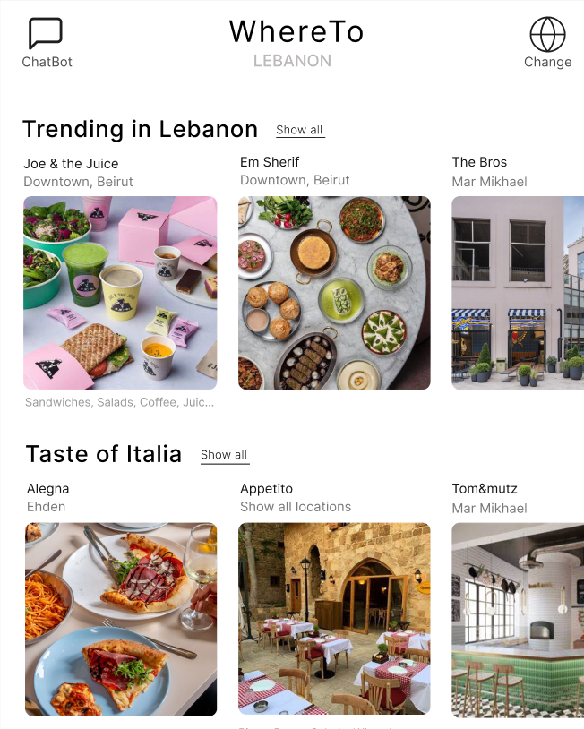
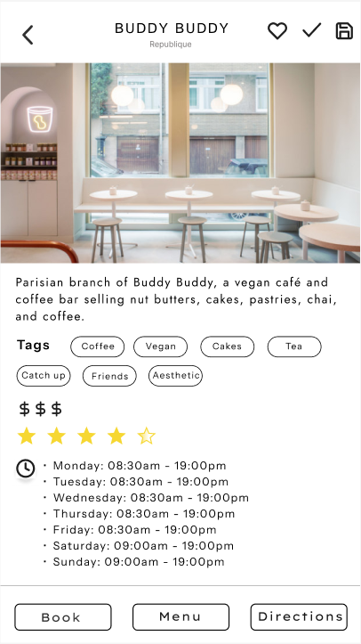
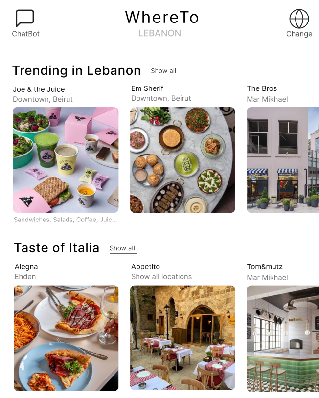
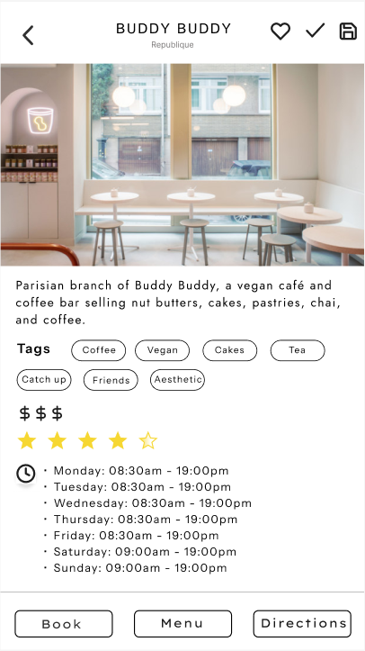
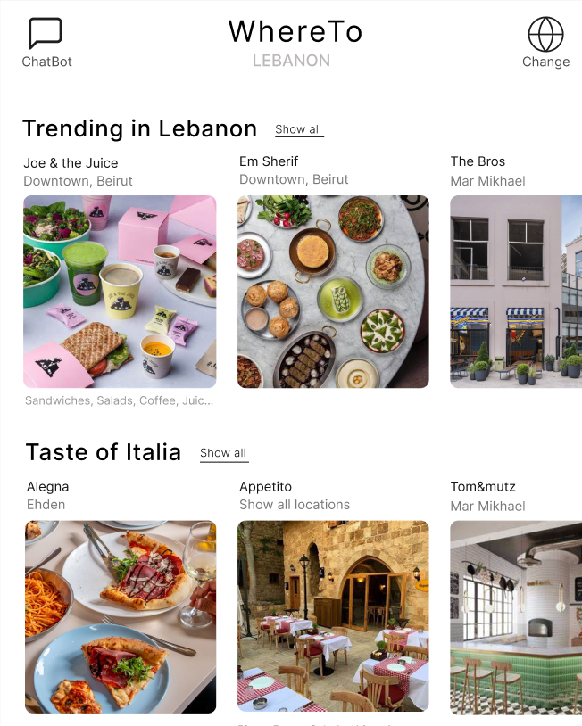
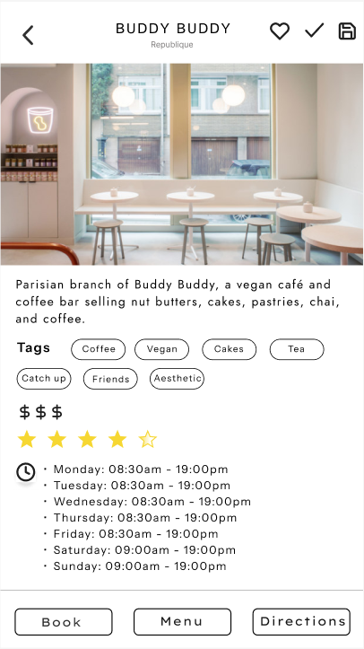

University Project – Kotlin, Firebase, Figma


WhereTo is a mobile application designed to help users discover new places to go out, whether they’re tourists or locals. The app allows users to filter locations by category (e.g. coffee, Italian food), price range, rating, and tags — making discovery fast and relevant.
As part of my role, I handled the **backend setup**, **custom database creation**, and integration of a chatbot feature to allow users to search for places through conversational input. The database was populated via a custom API and stores dynamic information such as descriptions, location, opening hours, and tags.
Built using **Kotlin** and **Java** in Android Studio, the app supports user registration, saving favorite spots, and displaying places in an organized UI designed in Figma. Firebase was used for user authentication and database management.